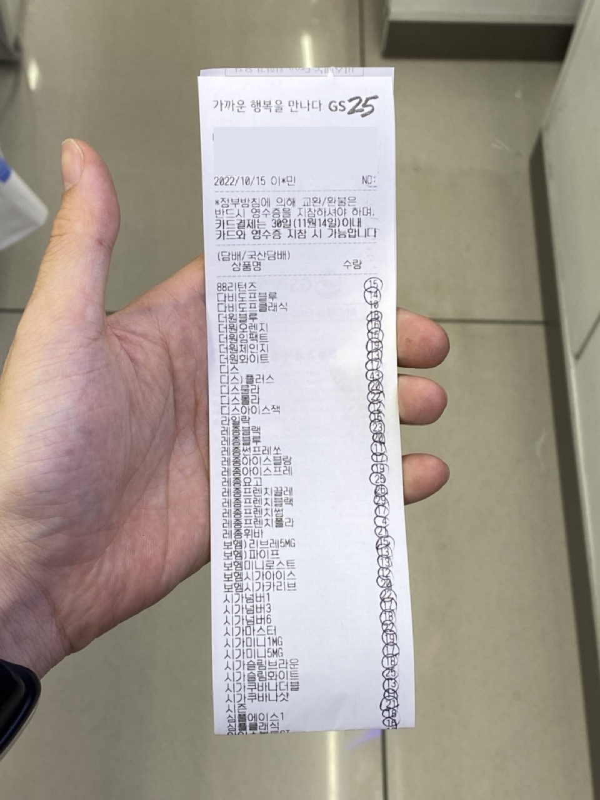
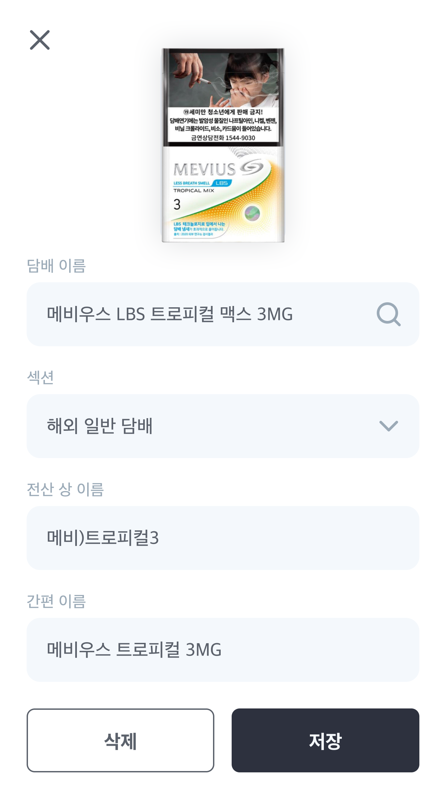
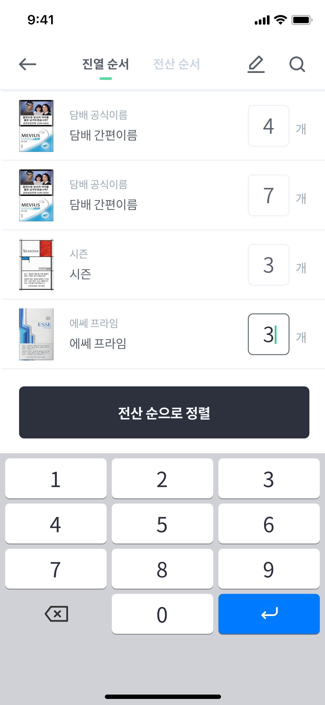
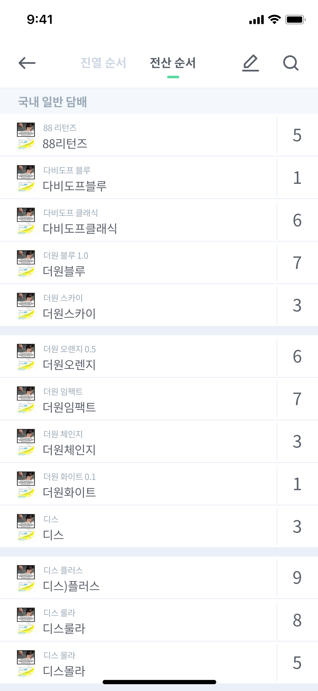
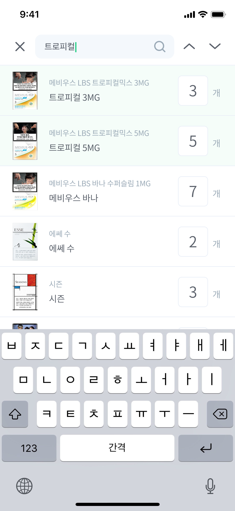
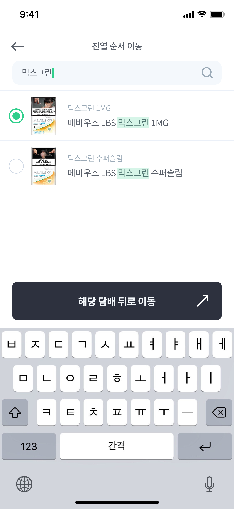

업무꿀팁

담배200으로 담배 세는 법
담배를 검수하는 방법은 크게 2가지가 있죠.
첫번째는 포스기로 담배의 바코드를 찍어 포스기에 표시된 재고가
실제 재고와 일치하는지 확인하는 방식인데, 진열대에서 담배를
하나하나 뺐다 꼈다 해가며 바코드를 하나씩 계속 찍어줘야하고,
진열대와 포스기를 계속 왔다갔다 해야하는 번거로움이 있죠. 동선
변경이 잦은 일련의 과정을 200번을 반복해야하는 문제가 있어요.

두번째는 포스기에서 검수종이를 출력해, 검수종이에 적힌 재고가
실제 재고와 일치하는 지 확인하는 방법이 있죠. 이 방식은 전산에
등록된 상품명 순으로 출력되기 때문에, 이 종이를 따라서
검수하다보면 담배 위치를 계속해서 찾아내야하는 불편함이 있죠.
머리가 아프거나 몸이 고되어서 힘든 작업이예요. 능숙해지면
빨라지기야 하겠지만 매 번 나름의 신체적, 정신적 노동이 필요한 건
마찬가지죠.
그래서 신체적으로, 정신적으로 담배 검수를 유난히 힘들어했던 한
편돌이는 담배200을 개발하기로 결심해요.
한번에 입력하고, 한번에 체크하자

담배200이 제안하는 방식은, 진열순서대로 한번에 갯수를
입력해놓고, 검수종이에 입력된 순서대로 정렬해서, 검수종이와
비교하는 방식이에요.
담배를 세고, 재고와 맞는지 하나 하나 확인하던 200번의
반복작업을, 한 번에 담배를 세고, 한 번에 확인하는 방식으로
바꾸는 거죠. 동선 낭비도 사라지고, 담배갯수를 외우거나 위치를
찾느라 머리 쓸 일도 없어요.
그럼 이제부터 담배200을 어떻게 사용할지 알려드릴게요!
담배 목록을 만들어요

여러분이 근무하는 매장의 담배목록의 정보를 담을 '담배 목록'을
만드세요. 담배 목록을 만든 사람은 그 목록의 관리자가 돼요. 이
담배목록은 다른 사람들과도 공유가 가능한데, 이 내용은 아래에
자세하게 말씀드릴게요.
담배를 추가해요

담배 목록을 만들었으면, 여러분의 매장에 있는 담배들을
추가해주세요. 4가지 정보를 입력해야하는데, 일단 섹션은 검수
용지에 나뉘어져 있는 섹션을 의미합니다. 보통 국내/해외 +
전자/일반 담배로 나뉘어요.
그리고 총 3가지의 이름이 필요한데, '담배 이름' 칸에는 담배의
공식적인 풀네임을 적어줘요. 그리고 검수용지에 출력되는 그
순서대로 정렬하기 위해 필요한, 전산 상 이름(검수용지에 출력되는
이름)을 입력해주세요. 그리고, 공식이름은 너무 길기 때문에 그
이름을 보며 일하긴 힘들어요. 여러분들이 쉽게 알아볼 수 있는 간편
이름을 지어주세요.
이렇게 담배진열대의 왼쪽 위부터 오른쪽 아래까지 순서대로
추가해주시면, 검수할 준비가 완료돼요. 처음엔 시간이 좀
걸리겠지만 앞으로 계속 쓸 수 있는 도구가 될테니 시간을
투자해봐요.
담배 갯수를 입력해요
여러분의 매장에 있는 담배들을 모두 추가하면 위와 같은
모습일거에요. 진열순서대로 추가했을테니 진열순서대로 하나하나
갯수를 입력해나가고 맨 마지막에 '전산 순으로 정렬하기' 버튼을
누르면 그 다음 단계로 넘어가요.

검수 용지와 비교해요
'진열 순서' 탭의 맨 하단의 '전산 순으로 정렬' 버튼이나 '전산
순서' 탭을 누르면 전산 순서로 정렬돼요. 이제 검수용지를 옆에
두고 5개씩 비교해보면 돼요 !

디테일한 기능
여기까지가 기본적인 검수 방법이에요. 다음으론 조금 더 디테일한
기능들에 대해 설명해드릴게요.
검색해서 찾아요
담배 검수하다가 손님이 와서 이미 입력을 마친 담배를 사가면, 해당
담배 재고는 수정되어야 해요. 그런데 200개에 달하는 담배 중 해당
담배를 찾기는 귀찮을 수 있어요. 그럴 때 검색 기능을 이용하면
편해요.

담배 목록을 편집해요
상단의 편집 아이콘을 누르면 편집모드가 돼요. 드래그앤 드랍으로
순서를 변경하기, 담배를 추가하기 등이 가능해요.

진열이 꽤 먼 곳으로 변경되었다면 드래그앤드랍으로 이동시키기
힘들 수 있어요. 그럴 땐 해당 담배들을 선택한 뒤, 도착점의 기준이
될 담배를 검색으로 골라서 그 곳으로 이동시킬 수 있어요.

담배 섹션을 수정하고 싶을 땐, '전산 순서' 탭에 들어가서
편집버튼을 누르면 돼요.
직접 해보세요!
글로 보면 다소 복잡하게 느껴질 수 있으나, 직접 해보면 쉽게
익히실 수 있을거에요. '담배 세는 자 만들기' 컨텐츠도 참고하시면
훨씬 빨리 검수하실 수 있어요!